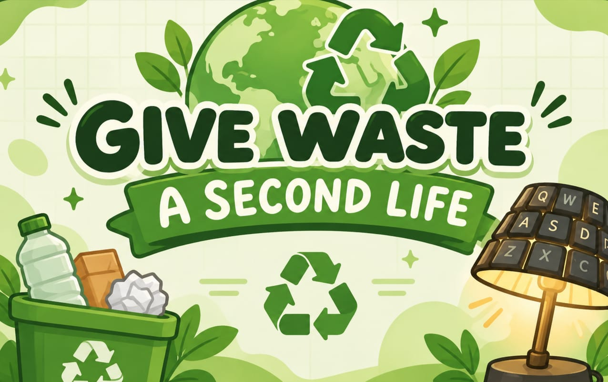

Perkuat Daur Ulang
Menyediakan sistem pengumpulan dan pengolahan limbah elektronik
Eco Innovation Project
Mengubah sampah menjadi sesuatu yang bernilai, kreatif, dan bermanfaat bagi masa depan melalui prinsip Reduce, Reuse, dan Recycle
Jelajahi Karya Tentang Kami
Limbah dari hardware menjadi masalah karena mengandung berbagai bahan yang berpotensi membahayakan lingkungan dan kesehatan apabila tidak dikelola dengan baik. Meningkatnya penggunaan teknologi menyebabkan limbah elektronik semakin bertambah.
Pengelolaan limbah hardware perlu dilakukan melalui berbagai cara agar sampah dapat memiliki nilai guna kembali.
Menyediakan sistem pengumpulan dan pengolahan limbah elektronik
Meningkatkan pemahaman tentang bahaya sampah elektronik
Memanfaatkan komponen bekas menjadi produk kreatif
Mendorong inovasi untuk pengelolaan sampah berkelanjutan